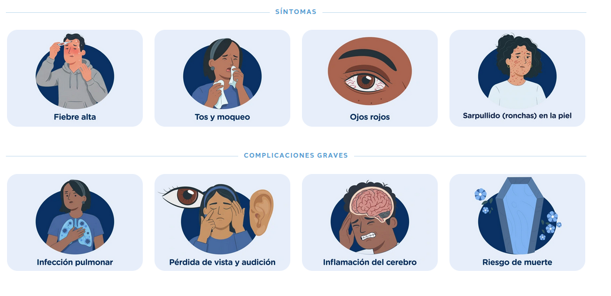

🔬 ¿Qué es el Sarampión? Es una enfermedad viral aguda, altamente contagiosa, transmitida por vía aérea (gotitas de Flügge). Afecta principalmente a niños no vacunados, aunque puede presentarse a cualquier edad. Se caracteriza por fiebre alta, exantema maculopapular, tos, coriza y conjuntivitis. Sus complicaciones incluyen neumonía, encefalitis, ceguera y riesgo de muerte. La vacunación (triple viral SPR) es la medida preventiva más efectiva.

| Semana | Casos | Acumulado | Incidencia* |
|---|